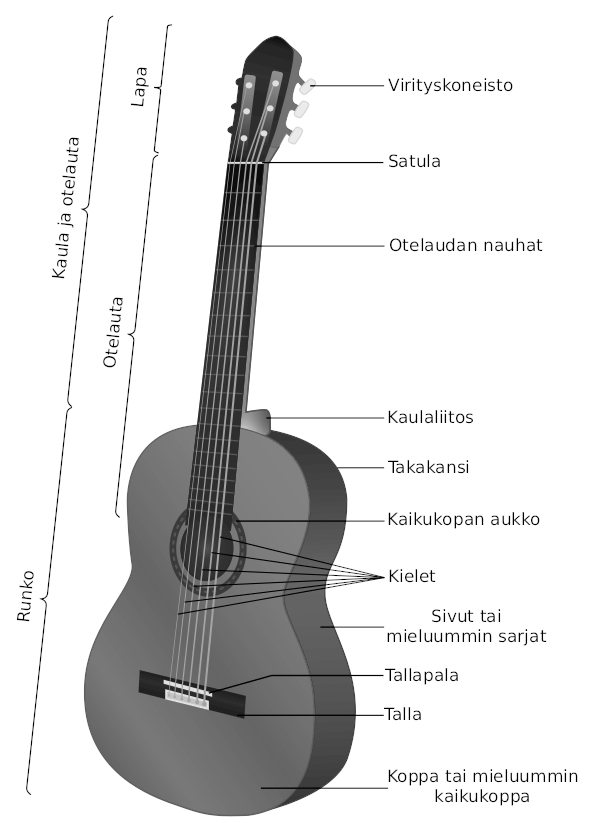

Lähde: Wikipedia
Tyypit
Kitarat jaetaan usein kahteen pääluokkaan: akustisiin ja sähkökitaroihin. Kummassakin luokassa on edelleen alaluokkia, joita on lähes loputtomasti ja jotka kehittyvät jatkuvasti. Esimerkiksi sähkökitara voidaan ostaa kuusikielisenä mallina (yleisin malli) tai seitsen- tai kaksitoistakielisenä versiona. Instrumentin yleinen muotoilu, sisäinen rakenne ja komponentit, puulaji tai -lajit, metalliosat ja elektroniset ominaisuudet kaikki lisäävät alaluokkien runsauden luonnetta ja sen ainutlaatuisia tonaalisia ja toiminnallisia ominaisuuksia.
Acoustic
Acoustic guitars form several notable subcategories within the acoustic guitar group: classical and flamenco guitars; steel-string guitars, which include the flat-topped, or "folk", guitar; twelve-string guitars; and the arched-top guitar. The acoustic guitar group also includes unamplified guitars designed to play in different registers, such as the acoustic bass guitar, which has a similar tuning to that of the electric bass guitar.
Renaissance and Baroque
Renaissance and Baroque guitars are the ancestors of the modern classical and flamenco guitar. They are substantially smaller, more delicate in construction, and generate less volume. The strings are paired in courses as in a modern 12-string guitar, but they only have four or five courses of strings rather than six single strings normally used now. They were more often used as rhythm instruments in ensembles than as solo instruments, and can often be seen in that role in early music performances. (Gaspar Sanz's Instrucción de Música sobre la Guitarra Española of 1674 contains his whole output for the solo guitar.)[20] Renaissance and Baroque guitars are easily distinguished, because the Renaissance guitar is very plain and the Baroque guitar is very ornate, with ivory or wood inlays all over the neck and body, and a paper-cutout inverted "wedding cake" inside the hole.
Classical
Classical guitars, also known as "Spanish" guitars,[21] are typically strung with nylon strings, plucked with the fingers, played in a seated position and are used to play a diversity of musical styles including classical music. The classical guitar's wide, flat neck allows the musician to play scales, arpeggios, and certain chord forms more easily and with less adjacent string interference than on other styles of guitar. Flamenco guitars are very similar in construction, but they are associated with a more percussive tone. In Portugal, the same instrument is often used with steel strings particularly in its role within fado music. The guitar is called viola, or violão in Brazil, where it is often used with an extra seventh string by choro musicians to provide extra bass support.
Alkuperäinen kuva: William Crochot - Acoustic guitar parts.png, CC BY-SA 4.0
In Mexico, the popular mariachi band includes a range of guitars, from the small requinto to the guitarrón, a guitar larger than a cello, which is tuned in the bass register. In Colombia, the traditional quartet includes a range of instruments too, from the small bandola (sometimes known as the Deleuze-Guattari, for use when traveling or in confined rooms or spaces), to the slightly larger tiple, to the full-sized classical guitar. The requinto also appears in other Latin-American countries as a complementary member of the guitar family, with its smaller size and scale, permitting more projection for the playing of single-lined melodies. Modern dimensions of the classical instrument were established by the Spaniard Antonio de Torres Jurado (1817–1892).[22]
Flat-top
Flat-top guitars with steel strings are similar to the classical guitar, however, the flat-top body size is usually significantly larger than a classical guitar, and has a narrower, reinforced neck and stronger structural design. The robust X-bracing typical of flat-top guitars was developed in the 1840s by German-American luthiers, of whom Christian Friedrich "C. F." Martin is the best known. Originally used on gut-strung instruments, the strength of the system allowed the later guitars to withstand the additional tension of steel strings. Steel strings produce a brighter tone and a louder sound. The acoustic guitar is used in many kinds of music including folk, country, bluegrass, pop, jazz, and blues. Many variations are possible from the roughly classical-sized OO and Parlour to the large Dreadnought (the most commonly available type) and Jumbo. Ovation makes a modern variation, with a rounded back/side assembly molded from artificial materials.
Archtop
Archtop guitars are steel-string instruments in which the top (and often the back) of the instrument are carved from a solid billet, into a curved, rather than flat, shape. This violin-like construction is usually credited to the American Orville Gibson. Lloyd Loar of the Gibson Mandolin-Guitar Mfg. Co introduced the violin-inspired F-shaped hole design now usually associated with archtop guitars, after designing a style of mandolin of the same type. The typical archtop guitar has a large, deep, hollow body whose form is much like that of a mandolin or a violin-family instrument. Nowadays, most archtops are equipped with magnetic pickups, and they are therefore both acoustic and electric. F-hole archtop guitars were immediately adopted, upon their release, by both jazz and country musicians, and have remained particularly popular in jazz music, usually with flatwound strings.
Resonator, resophonic or Dobros
All three principal types of resonator guitars were invented by the Slovak-American John Dopyera (1893–1988) for the National and Dobro (Dopyera Brothers) companies. Similar to the flat top guitar in appearance, but with a body that may be made of brass, nickel-silver, or steel as well as wood, the sound of the resonator guitar is produced by one or more aluminum resonator cones mounted in the middle of the top. The physical principle of the guitar is therefore similar to the loudspeaker.
The original purpose of the resonator was to produce a very loud sound; this purpose has been largely superseded by electrical amplification, but the resonator guitar is still played because of its distinctive tone. Resonator guitars may have either one or three resonator cones. The method of transmitting sound resonance to the cone is either a "biscuit" bridge, made of a small piece of hardwood at the vertex of the cone (Nationals), or a "spider" bridge, made of metal and mounted around the rim of the (inverted) cone (Dobros). Three-cone resonators always use a specialized metal bridge. The type of resonator guitar with a neck with a square cross-section—called "square neck" or "Hawaiian"—is usually played face up, on the lap of the seated player, and often with a metal or glass slide. The round neck resonator guitars are normally played in the same fashion as other guitars, although slides are also often used, especially in blues.
Steel guitar
A steel guitar is any guitar played while moving a polished steel bar or similar hard object against plucked strings. The bar itself is called a "steel" and is the source of the name "steel guitar". The instrument differs from a conventional guitar in that it does not use frets; conceptually, it is somewhat akin to playing a guitar with one finger (the bar). Known for its portamento capabilities, gliding smoothly over every pitch between notes, the instrument can produce a sinuous crying sound and deep vibrato emulating the human singing voice. Typically, the strings are plucked (not strummed) by the fingers of the dominant hand, while the steel tone bar is pressed lightly against the strings and moved by the opposite hand. The instrument is played while sitting, placed horizontally across the player's knees or otherwise supported. The horizontal playing style is called "Hawaiian style".[23]
Twelve-string
The twelve-string guitar usually has steel strings, and it is widely used in folk music, blues, and rock and roll. Rather than having only six strings, the 12-string guitar has six courses made up of two strings each, like a mandolin or lute. The highest two courses are tuned in unison, while the others are tuned in octaves. The 12-string guitar is also made in electric forms. The chime-like sound of the 12-string electric guitar was the basis of jangle pop.
Acoustic bass
The acoustic bass guitar is a bass instrument with a hollow wooden body similar to, though usually somewhat larger than, that of a six-string acoustic guitar. Like the traditional electric bass guitar and the double bass, the acoustic bass guitar commonly has four strings, which are normally tuned E-A-D-G, an octave below the lowest four strings of the six-string guitar, which is the same tuning pitch as an electric bass guitar. It can, more rarely, be found with five or six strings, which provides a wider range of notes to be played with less movement up and down the neck.
Electric
Electric guitars can have solid, semi-hollow, or hollow bodies; solid bodies produce little sound without amplification. In contrast to a standard acoustic guitar, electric guitars instead rely on electromagnetic pickups, and sometimes piezoelectric pickups, that convert the vibration of the steel strings into signals, which are fed to an amplifier through a patch cable or radio transmitter. The sound is frequently modified by other electronic devices (effects units) or the natural distortion of valves (vacuum tubes) or the pre-amp in the amplifier. There are two main types of magnetic pickups, single- and double-coil (or humbucker), each of which can be passive or active. The electric guitar is used extensively in jazz, blues, R & B, and rock and roll. The first successful magnetic pickup for a guitar was invented by George Beauchamp, and incorporated into the 1931 Ro-Pat-In (later Rickenbacker) "Frying Pan" lap steel; other manufacturers, notably Gibson, soon began to install pickups in archtop models. After World War II the completely solid-body electric was popularized by Gibson in collaboration with Les Paul, and independently by Leo Fender of Fender Music. The lower fretboard action (the height of the strings from the fingerboard), lighter (thinner) strings, and its electrical amplification lend the electric guitar to techniques less frequently used on acoustic guitars. These include tapping, extensive use of legato through pull-offs and hammer-ons (also known as slurs), pinch harmonics, volume swells, and use of a tremolo arm or effects pedals.
Some electric guitar models feature piezoelectric pickups, which function as transducers to provide a sound closer to that of an acoustic guitar with the flip of a switch or knob, rather than switching guitars. Those that combine piezoelectric pickups and magnetic pickups are sometimes known as hybrid guitars.[24]
Hybrids of acoustic and electric guitars are also common. There are also more exotic varieties, such as guitars with two, three,[25] or rarely four necks, all manner of alternate string arrangements, fretless fingerboards (used almost exclusively on bass guitars, meant to emulate the sound of a stand-up bass), 5.1 surround guitar, and such.
Seven-string and eight-string
Solid-body seven-string guitars were popularized in the 1980s and 1990s. Other artists go a step further, by using an eight-string guitar with two extra low strings. Although the most common seven-string has a low B string, Roger McGuinn (of The Byrds and Rickenbacker) uses an octave G string paired with the regular G string as on a 12-string guitar, allowing him to incorporate chiming 12-string elements in standard six-string playing. In 1982 Uli Jon Roth developed the "Sky Guitar", with a vastly extended number of frets, which was the first guitar to venture into the upper registers of the violin. Roth's seven-string and "Mighty Wing" guitar features a wider octave range.[citation needed]
Electric bass
Höfner 500/1 bass guitar that has been recognized by many music fans for decades as the bass used by Sir Paul McCartney for almost 60 years
The bass guitar (also called an "electric bass", or simply a "bass") is similar in appearance and construction to an electric guitar, but with a longer neck and scale length, and four to six strings. The four-string bass, by far the most common, is usually tuned the same as the double bass, which corresponds to pitches one octave lower than the four lowest pitched strings of a guitar (E, A, D, and G). The bass guitar is a transposing instrument, as it is notated in bass clef an octave higher than it sounds (as is the double bass) to avoid excessive ledger lines being required below the staff. Like the electric guitar, the bass guitar has pickups and it is plugged into an amplifier and speaker for live performances.
Taustakuva Designed by Freepik: www.freepik.com